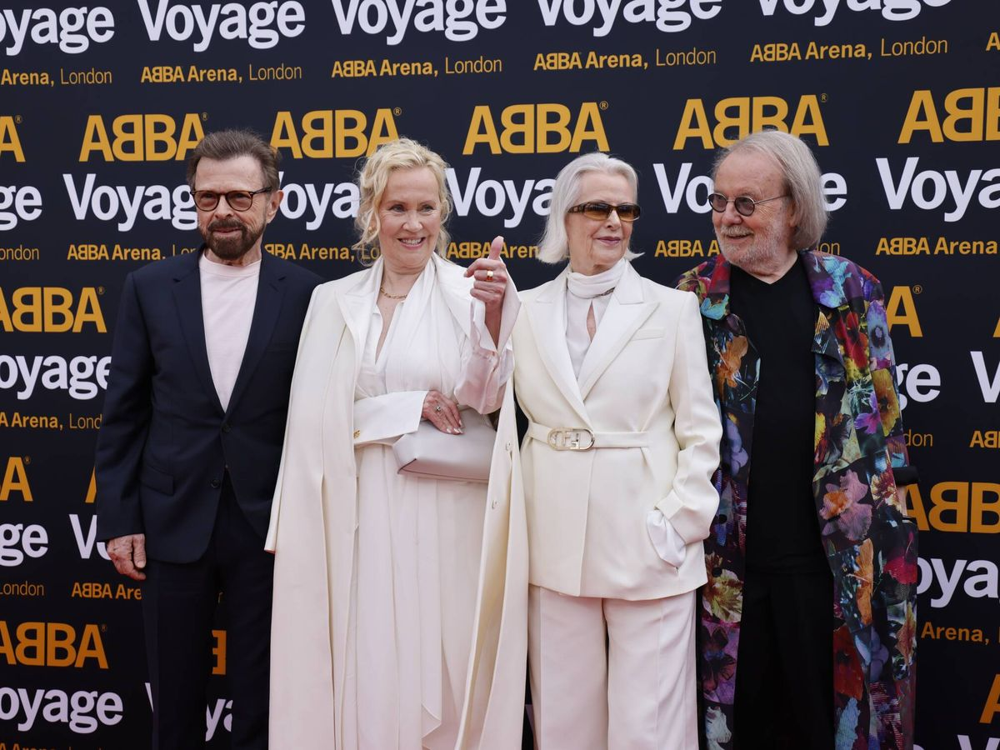

ABBA
Sobre la banda
Es un grupo sueco ( De musica pop ) sus integrantes son Agnetha Faltskog, Bjorn Ulvaeus, Benny Andersson y Anni-Frid.El nombre ABBA es un acronimo formado por las primeras letras de los nombres de cada miembro.
Historia
- Primer exito 1972
- Victoria en Eurovision 1974
- Giras 1975
- Estrellato 1976 - 1980
Declive
El 19 de noviembre de 1982, ABBA apareció por última vez en Suecia en el programa de televisión Nöjesmaskinen. Finalmente, el 11 de diciembre de 1982 hicieron su última presentación como ABBA en el programa The Late, Late Breakfast Show, transmitido al Reino Unido.
Grandes exitos
Las tres canciones mas famosas de la banda
- Mamma mia
- Dancing Queen
- The winner takes it all
Discografia
ABBA publicó ocho discos de estudio entre 1973 y 1981.Los nombres de los albumnes son Ring Ring (1973), Waterloo (1974), ABBA (1975), Arrival (1976), The Album (1977), Voulez-Vous (1979), Super Trouper (1980), The Visitors (1981), Voyage (2021), Live At Wembley Arena (2014) (2 CD) y The Essential Collection (2012) (DVD).